queadmin-frontend, SPA), version 1.0.0
| Document | TDD/LLD-1.0.0, Technical Design Document / Low-Level Design |
| Application | Dynamics Queue Admin (Queue Admin), the dispatch-queue management console of the Dynamics freight marketplace |
| Asset type | Web Application |
| Asset code | ASSET-DYN-QA-001 |
| Standard | INSA Secure Website Management Standard, Version 1.0, 2014 EC |
| Platform | Vite 8 + React 19 + TypeScript SPA (React Router 7), Redux Toolkit / RTK Query, socket.io-client 4, hand-written CSS |
| Production host | queue.dynamicsroute.tech |
| Design version | 1.0.0 (as-built) |
| Companion documents | SRS, System & Architecture Design (SDD), User Documentation (User Guide), Security Documentation |
| Submitting entity | Dynamics Transport |
| Contact person | Marew Masresha, General Manager: mmarew@gmail.com, 0983222221 |
| Prepared by | Marew Masresha, General Manager |
| Reviewed by | Marew Masresha, General Manager |
| Signatories | Marew Masresha, General Manager |
| Date of preparation | 15 October 2026 |
| Date of submission | 15 October 2026 |
This document covers the low-level design of the submitted release of the Dynamics
Queue Admin console as implemented in queadmin-frontend. It sits alongside
the SRS and the companion SDD and was prepared for review under the INSA Secure Website
Management Standard. Where the backend service (transportBackEndNative)
enforces a behaviour, we say so explicitly, so reviewers can tell what the client is
responsible for and what the backend actually decides. Every control named here points
at a concrete file and symbol in the release tree.
| 1 | Introduction |
| 2 | Architecture-to-code map |
| 3 | Build, tooling and configuration |
| 4 | Authentication and session management |
| 5 | Routing and authorization |
| 6 | State management |
| 7 | API integration |
| 8 | Realtime integration |
| 9 | Feature-level LLD |
| 10 | Data model and persistence |
| 11 | Status and state models |
| 12 | Validation, error handling and logging |
| 13 | Security implementation |
| 14 | Testing strategy |
| 15 | Control-to-code traceability |
| 16 | Deployment and operations |
| A | Appendix A — file/module index |
| B | Appendix B — document control |
| Fig 2.1 | Level-0 system context for the Queue Admin console |
| Fig 2.2 | Level-2 logical architecture layers |
Paths such as src/lib/redux/api/base.ts are relative to the repository root
of the queadmin-frontend SPA. Identifier strings such as
FR-QUEUE, FR-BID and NFR-SEC refer to requirement
families defined in the companion docs/insa/SDD.html (Section 12) and the
SRS. Controls C1–C36 are introduced by Section 15. We only cite a
requirement family where it exists in that companion set; controls that are solely
cross-cutting or build-time carry a dash in the “derived from” column.
This Technical Design Document / Low-Level Design (TDD/LLD) spells out how the Dynamics Queue Admin console is built, down to the level where another engineer can open the right file and change a behaviour without guessing. It sits next to the SRS (which says what the system has to do) and the SDD (which says what the system looks like and why). Where the SDD names a component, this document names the file, the symbol and the control that implements it.
Scope is the queadmin-frontend single-page application (SPA) as built and
submitted: the browser console that queue organization administrators (role 11),
queue dispatchers (role 12), transport-company administrators (role 3) and
transport-company staff (role 6) use to manage dispatch queues, organizations,
members, shipper requests, bids and reports. The backend service
transportBackEndNative is out of build scope, but we reference it wherever it
is the point that actually enforces the rule; those spots are labelled
Server or backend.
Mobile clients, the transportCompany SPA and infrastructure provisioning are out of scope, except where they show up as external actors of the console.
Three groups read this: INSA evaluation reviewers checking conformity to the Secure
Website Management Standard, maintainers and reviewers of the
queadmin-frontend codebase, and security assessors who need to separate the
controls the browser enforces from the ones the server enforces. It assumes you already
know React, TypeScript and HTTP.
The SRS requirement families are what traceability hangs off. The SDD (Section 12)
maps those families to design elements: FR-AUTH, FR-ROLE/ACCESS,
FR-ORG, FR-QUEUE, FR-BID, FR-ORDER,
FR-REALTIME, FR-REPORT, plus the non-functional families
NFR-SEC and NFR-DEPLOY. Section 9 of this document drills
each family down to the component and handler level, and Section 15 maps derived
controls to file-and-symbol evidence. We don't introduce a requirement family here that
isn't already in the companion set.
Code paths are shown relative to the repository root. Line references
(file.ts:NN) identify the as-built release and may shift by a few lines under
reformatting; the enclosing symbol name is the durable reference. Controls are labelled
Met, Open,
By design or Server/Debt as
defined in Section 15.1.
The API contract comment and the maintenance rule say that login and OTP verification
send no roleId, so the backend resolves the account's own role and
a role 12 dispatcher can sign in. The service as built still transmits
roleId: 11 on both calls. That's recorded as an open finding
(Section 4.1, C3), and it is the only client/contract divergence in the release.
This section ties the SDD's architectural view back to actual source files. It covers the system context (Level 0), the logical layers (Level 2), and the boot sequence that wires them together.
The console is a browser SPA that talks to one backend service over HTTPS (REST) and WSS (Socket.IO). It authenticates through an httpOnly cookie issued by the backend, and every read or write touches backend-owned data. There is no direct database access and no third-party runtime integration.

| External actor / system | Direction | Channel | Purpose |
|---|---|---|---|
| Queue org admin (role 11) / dispatcher (role 12) | In | Browser | Manage queue organizations, dispatch queue, members, bids. |
| Transport admin (role 3) / staff (role 6) | In | Browser | Cross-organization administration and oversight. |
transportBackEndNative REST API |
In / out | HTTPS (JSON) | All data reads and mutations; session issuance and authority. |
| Socket.IO gateway | In | WSS | Queue and bid realtime events; cookie-authenticated handshake. |
The app is layered so that presentation, orchestration and transport stay separable. The table below names each layer, what it owns, and the directories that implement it.

| Layer | Responsibility | Code locations |
|---|---|---|
| Routing & guards | Route composition, lazy loading, auth/role gates, org-presence gate. |
src/App.tsx, src/routes/AppRoutes.tsx,
src/components/auth/ProtectedRoute.tsx,
src/components/auth/RoleGuard.tsx
|
| Pages / features | Feature screens composing components and hooks. | src/pages/**, src/components/** |
| Orchestration hooks | Query/mutation wiring, socket subscription, derived metrics. |
src/hooks/**, src/components/**/<feature>.ts·tsx
|
| State | Global auth slice, UI/queue slice, persisted selection store. |
src/lib/redux/store.ts, src/lib/redux/slices/authSlice.ts,
src/lib/redux/slices/queueSlice.ts,
src/store/queueAdminStore.ts
|
| Transport / API | RTK Query API + endpoint modules, base query, reauth, tag invalidation. |
src/lib/redux/api/base.ts, src/lib/redux/api/*Endpoints.ts,
src/lib/api.ts
|
| Realtime | Socket lifecycle, room subscription, debounced invalidation. | src/lib/socket.ts, src/hooks/useQueueSocket.ts |
| Domain / utils | Types, zod schemas, formatters, mappers, static INSA data. |
src/types/**, src/schemas/**, src/utils/**,
src/data/insaStandard.ts
|
The console reaches a usable state in a fixed sequence:
src/main.tsx mounts the React root, installs the Redux
Provider, the i18n provider and the AuthProvider, then renders
App.
AuthContext reads the non-sensitive profile
from lib/auth.ts storage; an absent profile yields the unauthenticated state
and route guards redirect to login.
AppRoutes lazily loads the matched page
behind ProtectedRoute and, where required, RoleGuard.
baseQueryWithReauth with credentials: "include", so the httpOnly
cookie accompanies every call.
useQueueSocket
ensures a single Socket.IO connection, subscribes the active organization, and translates
events into debounced cache invalidation.
The manifest is package.json, and the runtime engine is Node
>=20.19.0. The build and quality gates run through these scripts:
| Script | Command | Role |
|---|---|---|
build |
tsc -b && vite build |
Type-check project references, then produce the production bundle. |
dev |
vite |
Local dev server on port 5173 with API/socket proxy. |
lint |
eslint . --ext ts,tsx --max-warnings 0 |
Static lint gate (zero warnings tolerated). |
test |
vitest run |
Unit test suite (Section 14). |
preview |
vite preview |
Serve the built bundle locally. |
Key runtime dependencies: react/react-dom 19,
react-router-dom 7, @reduxjs/toolkit 2 +
react-redux 9, socket.io-client 4, zustand 5,
zod 4, react-hook-form + @hookform/resolvers,
axios, i18next/react-i18next, date-fns,
lucide-react, sonner. One declared dependency,
@tanstack/react-query, is unused and is recorded as open debt
(Section 11.5).
vite.config.ts is a function config that loads environment variables and
derives the dev proxy target. Design points:
@ resolves to ./src via
path.resolve(import.meta.dirname, "./src"), keeping imports stable.
build.rollupOptions.output.manualChunks splits vendor (React,
React-DOM, React-Router), redux (Redux Toolkit, React-Redux, Zustand) and
icons (lucide-react) from application code, improving cacheability.
sourcemap: process.env.NODE_ENV !== "production" emits source maps only
outside production, so shipped bundles do not expose original sources (C27).
VITE_API_BASE_URL is set,
/api is proxied with changeOrigin and
/socket.io additionally with ws: true, so cookies and websockets
work in development without CORS gymnastics.
src/**/*.{test,spec}.?(c|m)[jt]s?(x).
@vitejs/plugin-react is the sole build plugin. There is no custom CSP injection
plugin in this release; Content-Security-Policy and related HTTP security headers are a
server/hosting responsibility and are recorded as deferred (C36).
The project uses TypeScript project references; tsc -b is the first half of
build and thus a hard gate (C28). Types are shared through
src/types/**, with API request/response shapes and role constants colocated in
src/types/queue.ts. Domain schemas are authored with zod in
src/schemas/queue.ts and consumed by react-hook-form resolvers.
Environment variables are read at build time by Vite (they are compiled into the bundle, so
changing them requires a rebuild). Resolution is centralised in
src/utils/baseUrl.ts:
| Concern | Resolution order |
|---|---|
| REST base URL |
VITE_API_BASE_URL → VITE_API_URL →
"/api"; normalised so the result ends in /api.
|
| Socket URL |
VITE_WEBSOCKET_URL → VITE_SOCKET_URL →
VITE_API_BASE_URL → window.location.origin.
|
That answers the NFR-DEPLOY concern that one artifact can be pointed at
different environments without code edits, and it makes plain the constraint that the
values are baked in at build time.
| Gate | Command | Control |
|---|---|---|
| Type check | tsc -b |
C28 |
| Lint | npm run lint |
C29 |
| Unit tests | npm test |
C30 |
| Production bundle | vite build |
C26, C27 |
Authentication is passwordless OTP. The console never stores a password and never receives or stores the JWT. The flow, as built:
/login (Auth with
initialStep="login") and submits a phone number. Auth calls
requestLoginOtp() (src/services/auth.service.ts), a
POST to /user/loginUser.
useOtpVerification, OTP_LENGTH = 6) with a 60-second
(RESEND_COOLDOWN_SECONDS) resend cooldown; it auto-submits when six digits
are complete.
verifyOtp(phoneNumber, otp) POSTs to
/user/verifyUserByOTP. On success the backend issues the session JWT as an
httpOnly cookie (Section 4.2) and returns the non-secret userData.
setAuth({ userData }) (AuthContext), which
persists the profile and dispatches the Redux setAuth action; the socket is
connected from the AuthContext effect.
/dashboard).
src/utils/constant.ts:16-18 states, as a maintenance rule, that login and OTP
verification send no roleId, leaving the backend to resolve the
account's own role from UserRole. That is the contract we intended, and it
is why the console can admit both role 11 and role 12. But the as-built
requestLoginOtp and verifyOtp in
src/services/auth.service.ts:19,27 still transmit
roleId: QUEUE_ORG_ADMIN_ROLE (11), which contradicts their own docblock
(lines 8-15) repeating the same role-omitted rule. Registration
(registerUser) correctly sends 11, because provisioning is the role
being created. We track the mismatch as C3, the only known client/contract mismatch; it
doesn't weaken the session model, but it can reject a role-12 login if the backend honours
the asserted role.
The session credential is an httpOnly cookie named token, set by the backend
(Utils/AuthCookie.js) when the OTP is verified. Because it is httpOnly,
JavaScript (this console included) cannot read it. The client carries it automatically
because every request is configured withCredentials/credentials: "include"
(src/lib/api.ts:9-12, src/lib/redux/api/base.ts:38-41).
JavaScript storage holds only the non-secret profile, under
queueadmin:user (src/lib/auth.ts). The record is
{ userData: { userId, userUniqueId, fullName, phoneNumber, email, roleId } }
(StoredUser). A one-time migration (purgeLegacyAuth) rewrites any
legacy queueadmin:auth record to the profile-only shape and removes the legacy
keys (localStorage and sessionStorage); see C6.
| Artifact | Location | Contains | Readable by JS |
|---|---|---|---|
| Session JWT | token httpOnly cookie |
Signed session claims | No |
| User profile | localStorage["queueadmin:user"] |
Non-secret profile only | Yes |
| Queue selection | localStorage["queueadmin:store"] (zustand persist) |
selectedOrgId only (partialized) |
Yes |
Logout is centralised and defensive.
AuthContext.logout() (src/context/AuthContext.tsx:38-44) walks
three steps in order: disconnect the socket, fire a best-effort
POST /user/logout to clear the server cookie, then clear local profile storage
and dispatch the Redux logout action, which sets auth to
null and always clears local storage (C9). Local state clears unconditionally
even if the server call fails, so a network error cannot strand the user halfway through
authentication.
Two additional paths end the session:
baseQueryWithReauth
(src/lib/redux/api/base.ts:61-67) intercepts any 401 and dispatches
logout(); the axios transport does the same in
src/lib/api.ts:15-26 (clear storage and redirect to /login).
Because the auth slice is the single source of truth, every authed page unmounts at once
(C7).
connect_error whose message contains
“unauthorized” or “token” disconnects and ends the session via a
dynamically-imported dispatch, avoiding an endless reconnect loop (C8,
src/lib/socket.ts:168-178).
ProtectedRoute (src/components/auth/ProtectedRoute.tsx:16-60)
requires a stored profile and, by default, at least one queue organization. It: redirects to
/login when unauthenticated; withholds render while the organization list is
loading; redirects to /setup-org when no organization exists; and
fails open on a query error (lines 48-52) so a transient list error
does not lock the user out. RoleGuard
(src/components/auth/RoleGuard.tsx:14-27) admits the allow-list
{11, 12, 3, 6} and redirects anything else to /login (C1, C2).
Both guards are convenience layers; the backend is the authority (Section 13.3).
Cookie and JWT lifetimes are role-based and server-set (Utils/SessionPolicy.js,
Utils/AuthCookie.js): system admins (roles 3 and 6) get
SESSION_TTL_ADMINS (default 24h); every other role, including queue org admins
(11) and dispatchers (12), gets SESSION_TTL_OTHERS (default 365d). The cookie
lifetime matches the JWT lifetime it carries. There is
no refresh-token flow: an expiry surfaces as a 401, that triggers logout, and the
user signs in again.
Routes are declared once in src/routes/AppRoutes.tsx inside a single
<Suspense> boundary; every page is code-split with
React.lazy
(C25). The table lists the as-built route behaviour:
| Path | Element | Guards | Notes |
|---|---|---|---|
/login |
Auth (initialStep="login") |
None | Public. |
/register |
Auth (initialStep="register") |
None | Public; provisions role 11. |
/setup-org |
SetupOrganization |
ProtectedRoute requireOrg={false} |
Requires login, not an existing org. |
/organizations |
Redirect → /dashboard |
— | Standalone page unreachable (open item, Section 11.5). |
/dashboard |
QueueDashboardPage |
ProtectedRoute + RoleGuard |
Live dispatch queue. |
/orgs/:queueOrganizationUniqueId |
QueueOrgManagePage |
ProtectedRoute + RoleGuard |
Organization administration. |
/reports |
ReportsPage |
ProtectedRoute + RoleGuard |
KPIs and analytics. |
/orders |
OrdersPage |
ProtectedRoute + RoleGuard |
Shipper requests / batches. |
/orgs/:queueOrganizationUniqueId/orders |
OrdersPage |
ProtectedRoute + RoleGuard |
Org-scoped orders view. |
/security |
SecurityPage |
ProtectedRoute + RoleGuard |
INSA compliance self-assessment. |
/settings |
SettingsPage |
ProtectedRoute + RoleGuard |
Theme / language / display only. |
/ |
Redirect → /dashboard |
— | Landing redirect. |
* |
Redirect → /organizations → /dashboard |
— | Catch-all fallback. |
Protected routes compose two guards: ProtectedRoute (authentication +
organization presence) on the outside, RoleGuard on the inside. The composition
is fail-closed: an unauthenticated request is redirected to /login before any
protected component mounts; an authenticated user without an organization is redirected to
/setup-org; and a caller outside the role allow-list is redirected to
/login (C1, C2). The single intentional permissive branch is the
organization-query error path, which fails open to avoid a lock-out, and is not a security
boundary.
State is split by lifetime and sensitivity: a Redux store for session and server cache, and
a small persisted zustand store for the active organization selection. There is no global
state for form input; forms are local React state or react-hook-form.
src/lib/redux/store.ts configures the store with three reducers,
auth, queue and the RTK Query api reducer, and
appends api.middleware for cache and tag orchestration.
| Slice | State | Actions |
|---|---|---|
auth |
{ auth: StoredAuth | null; hydrated: boolean } |
hydrateAuth, setAuth, logout |
queue |
{ selectedOrgId: string | null; orgsCache: QueueOrganization[] | null }
|
setSelectedOrgId, setOrgsCache, clearQueueState
|
api (RTK Query) |
Per-endpoint cache entries + tag registry | Generated hooks; invalidated by tag |
AuthContext reads state.auth.auth rather than owning state, so a
401 anywhere flips the UI to logged-out without a second source of truth
(AuthContext.tsx:20-23). The slice initialises from
getStoredAuth() so a reload rehydrates the profile synchronously.
setAuth and logout in the slice also write/clear storage,
keeping Redux and localStorage consistent (C6).
selectedOrgId and
orgsCache support UI selection; they are derived from URL/query data and can
be cleared without data loss.
src/store/queueAdminStore.ts is a persisted zustand store under the key
queueadmin:store. Only selectedOrgId is persisted via
partialize; socketConnected is intentionally transient. A one-time
cleanup deletes a stale userCreatedOrgs key from an earlier schema. Selecting
the active organization therefore survives reloads without persisting any server or secret
data.
src/lib/redux/api/base.ts defines one API object with
reducerPath: "api", refetchOnFocus: false,
refetchOnReconnect: false and keepUnusedDataFor: 300 (seconds).
Turning focus and reconnect refetch off lets the socket-driven invalidation of
Section 8 drive freshness, which avoids redundant network churn. Nine tag types
are registered: QueueOrganizations, QueueOrgMembers,
QueueStatus, DriverQueue, DriverBids,
DriverDirectory, Auth, VehicleTypes and
ShipperRequests.
Endpoints are not declared on the base object; each feature module calls
api.injectEndpoints(...) on the shared API, keeping features isolated while
sharing one reducer/middleware. A stale comment at base.ts:92 says “now
22 total”; the as-built total is 28 endpoints across five modules
(auth 3, queue-organization 11, driver-queue 9, shipper-request 3, vehicle 2). The comment
is documentation debt only and is catalogued in Section 7.1.
The console issues 28 operations across five endpoint modules, all injected
onto the single RTK Query API. Path fragments live in
src/utils/constant.ts, the stated single source of truth. Custom
queryFn endpoints are marked. Tag behaviour is what keeps the realtime cache
coherent (Section 8).
| Operation (hook) | Method | Path | Tag behaviour |
|---|---|---|---|
useRequestLoginOtpMutation |
POST | /user/loginUser |
None (auth). |
useVerifyOtpMutation |
POST | /user/verifyUserByOTP |
onQueryStarted persists profile via storeAuth; no cache tag.
|
useRegisterUserMutation |
POST | /user/createUser |
None. |
useListQueueOrganizationsQuery |
GET | /queueOrganization (limit=100) |
provides QueueOrganizations. |
useGetQueueOrganizationQuery |
GET | /queueOrganization/:id |
provides {QueueOrganizations, id}. |
useUpdateQueueOrganizationMutation |
PATCH | /queueOrganization/:id |
invalidates QueueOrganizations + id. |
useApproveQueueOrganizationMutation |
PATCH | /queueOrganization/:id/approve |
invalidates QueueOrganizations + id. |
useDeleteQueueOrganizationMutation |
DELETE | /queueOrganization/:id |
invalidates QueueOrganizations. |
useCreateQueueOrganizationMutation |
POST | /queueOrganization |
invalidates QueueOrganizations. |
useListQueueOrgMembersQuery |
GET | /queueOrganization/:id/members |
provides {QueueOrgMembers, id}. |
useAddQueueOrgMemberMutation |
POST | /queueOrganization/:id/members |
invalidates members + orgs; userUniqueId in body, not path. |
useDeactivateQueueOrgMemberMutation |
PATCH | /queueOrganization/:id/members/:membershipId/deactivate |
invalidates members + orgs. |
useReactivateQueueOrgMemberMutation |
PATCH | /queueOrganization/:id/members/:membershipId/reactivate |
invalidates members + orgs. |
useDeleteQueueOrgMemberMutation |
DELETE | /queueOrganization/:id/members/:membershipId |
invalidates members + orgs. |
useGetQueueStatusQuery |
GET |
/queue/status (queueOrganizationUniqueId,
queueDate)
|
provides scoped QueueStatus, LIST and type tags. |
useManualCheckinMutation |
POST | /queue/manualCheckin |
invalidates QueueStatus:id|today, DriverQueue:id. |
useDispatchQueueMutation |
POST | /queue/dispatch |
invalidates queue tags + ShipperRequests. |
useAcceptDriverRequestMutation |
PUT | /shipper/acceptDriverOffer |
custom queryFn; requires explicit ids; invalidates scoped queue + bids.
|
useGetBidsForOrderQuery |
GET | /queue/bidding/order/:shipperRequestUniqueId/bids |
provides {DriverBids, id}; page/limit params. |
useApproveBiddingMutation |
POST | /queue/bidding/approve |
invalidates ShipperRequests (per-order gate). |
useOverrideEntryMutation |
PATCH | /queue/entry/:queueUniqueId/override |
invalidates QueueStatus, DriverQueue. |
useRemoveEntryMutation |
DELETE | /queue/entry/:queueUniqueId |
invalidates QueueStatus, DriverQueue. |
useGetEntryHistoryQuery |
GET | /queue/entry/:queueUniqueId/history |
provides {DriverQueue, <id>-history}. |
useCreateQueueOrderMutation |
POST | /shipperRequest/createRequest |
invalidates QueueStatus, DriverQueue,
ShipperRequests.
|
useGetShipperRequestsQuery |
GET | /user/getShipperRequest4allOrSingleUser |
provides ShipperRequests; defaults target=all&limit=100.
|
useGetShipperRequestBatchesQuery |
GET | /shipperRequestBatch |
provides ShipperRequests; requestMode=company_target. |
useListVehicleTypesQuery |
GET | /admin/vehicleTypes (limit=100) |
custom queryFn; falls back to defaults; provides
VehicleTypes.
|
useListVehicleDriversQuery |
GET | /queue/driverDirectory |
provides DriverDirectory; page=1&limit=20. |
Two HTTP clients coexist. The RTK Query path uses
fetchBaseQuery (src/lib/redux/api/base.ts:38-41) with
baseUrl: getBaseUrl() and credentials: "include", wrapped by
baseQueryWithReauth which converts any 401 into a global logout().
The service path uses a shared axios instance (src/lib/api.ts:9-26) with
withCredentials: true and its own 401 interceptor (clear storage + redirect to
/login). Both automatically carry the httpOnly cookie, so neither adds an
Authorization header. The active OTP login uses the axios service path; feature screens use
the RTK Query hooks.
getBaseUrl() (src/utils/baseUrl.ts) resolves the REST base as
described in Section 3.4 and normalises it to end in /api.
useListVehicleTypesQuery is a
queryFn that, on any error or malformed shape, registers and returns
DEFAULT_VEHICLE_TYPES, so order creation is never blocked by missing
reference data (C20, C31).
useAcceptDriverRequestMutation
validates each id against a UUID pattern and, when an id is missing, returns a visible
CUSTOM_ERROR instead of guessing. The former heuristic (fetch 100 requests
and fuzzy-match) was removed because under concurrent bidding it could resolve to the
wrong driver with no error (C18).
src/utils/formatters.ts and the order mappers
decode optional fields defensively so a single malformed record degrades one row rather
than crashing a list.
Mutations invalidate by tag rather than patching cache entries (C22). List reads are
deliberately bounded to keep payloads predictable: queue organizations and shipper requests
use limit=100; batches use limit=100 with
includeBids; the driver directory uses limit=20 (C35). There is no
endpoint retry/backoff layer beyond the socket reconnection policy (Section 8.4).
src/lib/socket.ts owns a single module-scoped Socket.IO connection. It is
created by connectSocket() (called from the AuthContext effect
when an authenticated profile exists) and torn down by disconnectSocket() on
logout. Connection options: transports ["websocket", "polling"],
withCredentials: true, auth carrying
{ user, phoneNumber }, reconnection enabled with 5 attempts, 1.5s–5s backoff,
and a 20s timeout (C5, C8).
The socket identity is computed by extractCredentials(): roles 3 and 6 map to
"admin"; every other role, including queue org admin (11) and dispatcher (12),
maps to "queueOrgAdmin". Role 12 is deliberately not given its
own identity: the backend keys sockets as ${userType}:${phone} and queue
fan-out selects roleId IN (11,12) under the queueOrgAdmin key, so
a distinct dispatcher identity would silently receive no events (C24).
Inbound payloads are handled by handleQueuePayload(), which tolerates both JSON
strings and objects, extracts a message type from messageTypes (string or
{ type, message }) or the message field, and ignores
acknowledgements and heartbeats (subscribed, unsubscribed,
ping, pong). Non-acknowledgement events are forwarded to
registered handlers (onQueueEvent) and simultaneously trigger a debounced cache
invalidation (C23).
| Signal | Classification | Invalidation (debounced) |
|---|---|---|
queue_org_approved, queue_org_updated,
queue_org_deleted, queue_member_added,
org_approved, or a payload with org id + approval status
|
Organization event | QueueOrganizations after 100 ms. |
| Any other queue/bid event | Operational event |
QueueStatus, DriverQueue, ShipperRequests after
250 ms.
|
The debounce collapses bursts into one invalidation, and a parse failure still triggers an invalidation so the cache cannot drift permanently stale (C23).
Subscriptions are refcounted in a module-scoped Map keyed
${queueOrganizationUniqueId}_${queueDate||""}.
subscribeToQueue() increments the refcount (and connects if needed);
unsubscribeFromQueue() decrements and only emits
queue:unsubscribe when the count reaches zero (C24). On every (re)connect the
handler replays all active subscriptions with queue:subscribe, so a transient
network blip does not silently unsubscribe the page
(src/lib/socket.ts:156-161).
Connectivity is mirrored into the zustand store via
setSocketConnected and surfaced by useQueueSocket as
{ socketConnected, isLive }. A connect_error whose message
contains “unauthorized” or “token” disconnects and dispatches the
Redux logout, ending the session rather than retrying indefinitely (C8,
src/lib/socket.ts:168-178). The dynamic imports of the store and slice
(clearSessionOnUnauthorizedSocket) avoid a module cycle.
This section takes each requirement family from the companion SRS/SDD down to the
components, handlers and schemas that implement it: FR-AUTH,
FR-ROLE/ACCESS, FR-ORG, FR-QUEUE,
FR-BID, FR-ORDER, FR-REALTIME and
FR-REPORT, with the cross-cutting NFR-SEC and
NFR-DEPLOY families realised as the numbered controls of Section 15.
Authentication is phone-first and passwordless. Both /login and
/register render src/components/auth/Auth.tsx with an
initialStep prop (src/routes/AppRoutes.tsx:58-59);
Auth is the step controller that mounts Login.tsx,
VerifyOtp.tsx and Register.tsx inside
AuthLayout/AuthShell. Shared inputs live in
fields.tsx; the six-box one-time-code entry is OtpDigitInputs.tsx.
| Step | Component / symbol | Behaviour |
|---|---|---|
| Phone capture | Login.tsx, fields.tsx, loginSchema |
Phone entered as X-XX-XX-XX-XX, validated and normalised by
utils/phoneFormatter.ts (C19).
|
| Login request | services/auth.service.ts → login() |
POST user/loginUser with { phoneNumber, roleId: 11 }; the
backend issues a one-time code (C3, open finding F1).
|
| Code verification | VerifyOtp.tsx, auth.service.ts → verifyOtp() |
POST user/verifyUserByOTP; on success the backend sets the httpOnly
session cookie and returns a non-sensitive profile (C11, C4).
|
| Registration | Register.tsx, registerSchema |
POST user/createUser with sanitised fullName,
phoneNumber and optional email (C16, C17).
|
| Persist profile | context/AuthContext.tsx, lib/auth.ts |
Only the profile is written to queueadmin:user; no bearer token is stored
(C11, C12).
|
| Logout | AuthContext.tsx → logout() |
Best-effort POST user/logout, then clearAuth() and the Redux
logout action (C15).
|
Auth HTTP is performed by the shared axios instance (lib/api.ts), so a 401 from
any call clears the session (C14, Section 13.3). There is no password field and no
token refresh flow: a session that expires forces a return to /login (open
finding F6, Section 15.3).
Two wrappers, composed in src/routes/AppRoutes.tsx, guard the application.
ProtectedRoute enforces authentication (and, unless
requireOrg={false}, the existence of an organisation, redirecting to
/setup-org otherwise); RoleGuard enforces the role allow-list
{11, 12, 3, 6} and redirects disallowed roles to /login (C6, C7,
C9). Route components are lazy-loaded under a single Suspense fallback
(PageLoader).
| Path | Element | Guard |
|---|---|---|
/login, /register |
Auth |
Public |
/setup-org |
SetupOrganization |
ProtectedRoute requireOrg={false} |
/dashboard |
QueueDashboardPage |
ProtectedRoute + RoleGuard |
/orgs/:queueOrganizationUniqueId |
QueueOrgManagePage |
ProtectedRoute + RoleGuard |
/orders, /orgs/:id/orders |
OrdersPage |
ProtectedRoute + RoleGuard |
/reports |
ReportsPage |
ProtectedRoute + RoleGuard |
/security |
SecurityPage |
ProtectedRoute + RoleGuard |
/settings |
SettingsPage |
ProtectedRoute + RoleGuard |
/organizations, /, * |
Redirects | to /dashboard or /organizations |
The allow-list is a usability gate; the backend re-authorises every action. Client checks are documented as defence in depth, not as the security boundary (C9).
components/organization/SetupOrganization.tsx collects name, type, phone,
address and coordinates, validated by setupOrgSchema, and creates the
organisation through the queueOrganization endpoints.
pages/queue-org-manage/QueueOrgManagePage.tsx
renders an organisation's profile and members; the child parts are
OrgProfileForm.tsx (queueOrgProfileSchema),
AdminApprovalActions.tsx (approve) and StatusBadge.tsx.
MembersTable.tsx gates
add/deactivate/reactivate/remove behind canManage (role 11) and calls
queueOrganization/:id/members with the member's userUniqueId in
the request body (C10).
queue slice (selectedOrgId) and mirrored in
store/queueAdminStore.ts, so tenancy follows the operator's selection (C10).
pages/organizations/OrganizationsPage.tsx is present but not routed; only its
stylesheet is imported by the dashboard. It is recorded as a legacy/unused module in
Appendix A.
| Operation | Components | Schema / endpoint |
|---|---|---|
| Board and metrics |
pages/dashboard/QueueDashboardPage.tsx,
queue/QueueBoard.tsx, queue/table/QueueDesktopTable.tsx,
queue/table/QueueMobileTable.tsx,
queue/QueueVehicleTypeCard.tsx
|
queue/status |
| Dispatch | queue/DispatchModal.tsx + queue/dispatch/* |
dispatchSchema → queue/dispatch |
| Manual check-in |
queue/CheckinModal.tsx, queue/checkin/useCheckinData.ts,
checkin/CheckinDriverSearch.tsx,
checkin/CheckinPositionSection.tsx
|
checkinSchema → queue/manualCheckin |
| Queue override | queue/OverrideModal.tsx |
overrideSchema → queue/entry/:queueUniqueId/override
|
| Entry history | queue/EntryHistoryModal.tsx |
GET queue/entry/:queueUniqueId/history |
| Create order | queue/CreateOrderModal.tsx + queue/order-modal/* |
createOrderSchema → shipperRequest/createRequest,
shipperRequestBatch
|
Check-in note. checkinSchema requires only the driver
vehicleDriverUniqueId (a UUID) and an optional positive integer
queueNumber. When no number is supplied, the console shows an auto-assigned
position estimate (CheckinPositionSection). There is no client-side
geofence gate: a modelled checkinRadiusKm value is not enforced, and
calculateDistanceKm is used only to display order distances
(Section 11.5).
Driver bids for a shipper request are shown by
components/orders/DriverBidsModal.tsx and the orders/bids/* family
(BidsToolbar, BidRow, BidOfferComparison,
BiddingBoardToggle). Listing and filtering are handled by
useDriverBidsFilter.ts over
GET queue/bidding/order/:shipperRequestUniqueId/bids; rows are normalised by
mapDriverBids.ts (mapDriverBidToRow,
isBidActionable). Acceptance is performed by
useAcceptDriverBid.ts, which submits explicit driver/user identifiers to
queue/bidding/approve (and the shipper-side
shipper/acceptDriverOffer). The handler accepts only the named
identifiers and fails loudly otherwise; there is no silent auto-fallback (C10).
pages/orders/OrdersPage.tsx and
pages/orders/ordersDataMapper.ts drive the order list, supported by
OrdersTable, OrdersCardsList, OrdersModals, the
mobile/* cards and the bids/* sub-family. Route display helpers
trimAddress, formatTrimmedRoute and formatRoute live
in orders/OrdersTypes.ts; extractOfferCost and
calculateDistanceKm in utils/formatters.ts. New requests are
created from the order modal via shipperRequest/createRequest and
shipperRequestBatch.
The Socket.IO client and its lifecycle are described in Section 8.
hooks/useQueueSocket.ts is the page-facing consumer, exposing
{ socketConnected, isLive }, subscribing the active queue, and translating
inbound events into the debounced cache invalidations of Section 8.2 (C23, C24).
pages/reports/ReportsPage.tsx presents operator metrics computed by
hooks/useReportsMetrics.ts from the queue and order queries. All figures are
derived from server state; nothing is persisted client-side (C30).
pages/security/SecurityPage.tsx renders four tabs (overview,
requirements, vulnerabilities and testing) from the embedded INSA standard data in
src/data/insaStandard.ts (5 focus areas, 35 requirements, Annex A
vulnerabilities 1–8, Annex B tests 1–102). Progress is tracked by
hooks/useSecurityChecklist.ts and utils/securityChecklist.ts over
the local key insa_security_checklist_v1; SecurityChecklist.tsx
adds search and status filtering (C36).
Domain shapes are declared once in src/types/queue.ts (roles, organisation
types QUEUE_ORG_TYPES, journey status, queue and member records) and consumed
by the RTK Query layer. Argument and result shapes for the API hooks are declared in
src/lib/redux/api/types.ts. Because the backend owns the business objects, the
client types tolerate absent optional fields instead of asserting server data into
existence (Section 7.3, Section 12.1).
The console persists only a small, non-sensitive set of values. No bearer token and no business data are written to browser storage; the session itself lives in an httpOnly cookie the JavaScript cannot read (C11, C28).
| Key | Storage | Written by | Contents | Sensitivity |
|---|---|---|---|---|
queueadmin:user |
localStorage (sessionStorage fallback) | lib/auth.ts |
Non-sensitive profile (no token) | Low |
queueadmin:auth (legacy) |
localStorage | Purged on load by purgeLegacyAuth |
Old JWT (removed if present) | was High → eliminated (C12) |
queueadmin:store |
localStorage (zustand persist) | store/queueAdminStore.ts |
selectedOrgId only (partialised) |
Low |
app_dark_mode |
localStorage | contexts/ThemeContext.tsx |
"true" / "false" |
None |
app_language |
localStorage | i18n/index.ts |
"en" / "am" |
None |
insa_security_checklist_v1 |
localStorage | hooks/useSecurityChecklist.ts |
Per-test pass/fail map | None |
| Session cookie (server) | httpOnly cookie | Backend at verifyUserByOTP |
Session JWT | High; not readable by JS (C11) |
Organisations, queues, members, bids, shipper requests and vehicle types are held by the backend service. The client keeps them only as in-memory RTK Query caches (Section 10.4) and re-reads them from the server; it never treats a cached copy as authoritative (C30).
The API slice (src/lib/redux/api/base.ts) defines nine cache tags:
QueueOrganizations, QueueOrgMembers, QueueStatus,
DriverQueue, DriverBids, DriverDirectory,
Auth, VehicleTypes and ShipperRequests. Mutations
invalidate the tags they affect, and realtime events invalidate the same tags through the
debounced path of Section 8.2, so the cache converges on the server's view rather than
on pushed payloads (C23, C30).
Journey status is an integer code rendered through the map in
src/utils/journeyStatus.ts. Codes 1–20 are the closed vocabulary; an
unrecognised code falls back to a neutral label rather than throwing.
| Code | Symbol | Meaning |
|---|---|---|
| 1 | waiting |
Queued, not yet requested |
| 2 | requested |
Offer requested of a driver |
| 3 | acceptedByDriver |
Driver accepted |
| 4 | acceptedByShipper |
Shipper accepted |
| 5 | goToLoadingPlace |
Driver en route to load |
| 6 | loading |
Loading in progress |
| 7 | loaded |
Loaded |
| 8 | journeyStarted |
Journey started |
| 9 | journeyCompleted |
Journey completed |
| 10 | cancelledByShipper |
Cancelled by shipper |
| 11 | rejectedByShipper |
Rejected by shipper |
| 12 | cancelledByDriver |
Cancelled by driver |
| 13 | cancelledByAdmin |
Cancelled by admin |
| 14 | completedByAdmin |
Completed by admin |
| 15 | cancelledBySystem |
Cancelled by system |
| 16 | noAnswerFromDriver |
Driver did not answer |
| 17 | notSelectedInBid |
Bid not selected |
| 18 | rejectedByDriver |
Rejected by driver |
| 19 | replacedByCompanyAssignment |
Replaced by company assignment |
| 20 | partiallyCancelled |
Partially cancelled |
Organisations carry an approval state rendered by
components/queue-org-manage/StatusBadge.tsx and acted on by
AdminApprovalActions.tsx (approve via
queueOrganization/:id/approve). Transitions are server-enforced and broadcast
as queue_org_approved / queue_org_updated /
queue_org_deleted events, which invalidate the
QueueOrganizations tag (Section 8.2, C30).
The auth Redux slice exposes { auth, hydrated }. States are:
anonymous (no profile; routing redirects to /login),
hydrating (profile being restored from storage before guards decide),
authenticated (profile present, socket connected) and expired (a 401
clears the profile and returns the user to /login). The hydration gate prevents
a flash of protected content before the guard decision (C14, C31).
Socket connectivity is mirrored into the zustand store and surfaced by
useQueueSocket as { socketConnected, isLive }. A
connect_error whose message indicates an unauthorised or token failure ends the
session rather than retrying indefinitely (C8, Section 8.4).
We record the behaviours below so reviewers can tell them apart from the secured paths above. Each one maps to an open finding in Section 15.3.
checkinRadiusKm value
is not enforced as a physical gate; only the driver id and optional queue number are
validated (C16, F7).
roleId: 11 although
the API contract comment states no role should be sent (C3, F1).
All user-entered data passes through Zod schemas in src/schemas/queue.ts before
submission. The schemas bound lengths, restrict enumerations and coordinate ranges, and
transform values through the sanitizers below, providing client-side parity with backend
validation (C16).
| Schema | Used by | Key rules |
|---|---|---|
loginSchema |
Login | Phone 10–20 chars, digits/+ only |
registerSchema |
Register | Name 2–100 (sanitised); phone 12–20; email valid or empty |
setupOrgSchema, createQueueOrgSchema |
Setup organisation | Name ≤ 255; enum type; address required; lat/long bounded |
queueOrgProfileSchema |
Org profile form | Same as setup, with optional bounded coordinates |
dispatchSchema |
Dispatch modal | Optional shipper request id must be a UUID if present |
checkinSchema |
Check-in modal | Driver id UUID; optional positive integer queue number |
overrideSchema |
Override modal | Queue number ≥ 1; reason ≤ 500 (sanitised) |
createOrderSchema |
Create order modal | Quantity > 0 ≤ 10,000 quintals and ≤ vehicle capacity; non-negative cost; delivery date ≥ shipping date; bounded coordinates (C20) |
uuidSchema |
Shared | z.string().uuid() for all identifiers (C20) |
Text and email inputs are sanitised in the schema layer by stripTags,
stripCtrl, sanitizeText and sanitizeEmail, which
remove HTML tags and control characters, collapse whitespace and normalise email
(src/schemas/queue.ts:7-17). Rendering relies on React's automatic output
escaping; the codebase contains no dangerouslySetInnerHTML,
innerHTML or eval usage (C17, C18). Together these close the
stored/reflected XSS vector of Annex A#4.
utils/phoneFormatter.ts strips a leading +251, 251 or
0, caps input at nine digits, renders the X-XX-XX-XX-XX mask and
produces E.164 +251… for transmission. isValidPhoneDigits
accepts exactly nine digits (C19).
API errors are normalised by getApiError (lib/api.ts) and
parseError (utils/parseError.ts) into a safe message that is shown
as a toast via sonner (<Toaster richColors /> in
main.tsx). Raw server stack traces, SQL or internal identifiers are never
surfaced to the user. A 401 from any request routes through the interceptor to
clearAuth() and a redirect to /login, unless the user is already
on the login page (C14, C35).
The production bundle is built with source maps disabled (vite.config.ts), so
client code is not shipped in readable form, and no token or credential is written to logs
(C29, C35). Application monitoring, audit logging and log retention are server-side
responsibilities (NFR-DEPLOY, C25); the client's only diagnostic surface is the
transient toast described above.
The client is an untrusted rendering surface. Every privilege decision that matters is made by the backend service; the browser-side guards and role allow-lists exist for usability and defence in depth. Figure 2.1 (Section 2) shows the boundary between the SPA, the API and the Socket.IO channel, all of which authenticate with the same session cookie. This is the design's response to Annex A#8 (lack of authentication and authorisation) and Annex B tests 23–28.
All rendering flows through React's escaped JSX, and no unescaped-HTML sink is used (C18). User-supplied text is additionally stripped of tags and control characters at the schema boundary (C17). No user content is injected into URLs or attribute positions without encoding, addressing Annex A#4.
Authentication is phone + one-time code; the session is a backend-issued httpOnly cookie set
at verifyUserByOTP. JavaScript never receives, stores or transmits a bearer
token; the only persisted auth value is the non-sensitive profile, and the legacy
token key is actively purged (C11, C12). Requests carry cookies via
credentials: "include"; there is no Authorization header. A 401 or
an unauthorised socket error ends the session immediately (C8, C14), and logout performs a
best-effort server call before clearing local state (C15). This addresses Annex A#3
(improper session management) and Annex B tests 63–77.
Because the session is cookie-based, CSRF protection depends on the cookie's
SameSite attribute and the backend's cross-origin policy, both of which are
server-side settings (C25, F5); the client sends no bespoke CSRF token. This dependency is
recorded rather than claimed as a client control (Annex A#5).
The canonical origin is HTTPS (index.html canonical and Open Graph URLs, plus
public/sitemap.xml), and the API base resolves to an absolute
/api URL by baseUrl.ts (C21). There is no client-side use of
http:// resources and no mixed content (C22). The validity and renewal of the
TLS certificate, and the presence of HSTS, are hosting obligations (C25,
Annex B#14–18).
public/robots.txt allows the public site and points only at
sitemap.xml; it lists no sensitive paths (C26). The client bundle carries only
VITE_-prefixed public variables and no secrets (C27), and production builds are
shipped without source maps (C29). There are no shipped debug routes or developer panels
beyond the intentional /security self-assessment page (C35).
Dependencies are declared with pinned lockfile resolution and no runtime CDN imports; the
build is fully local (C33). Runtime dependencies are limited to the React/Redux/RTK Query,
routing, forms, validation, socket, i18n and chart-free UI stack listed in
package.json. An unused @tanstack/react-query dependency remains
in the manifest (F3).
Every implementation decision above is carried as a numbered control C1–C36 in the register of Section 15.1, mapped to the file and symbol that provides the evidence. Open items and server-side dependencies are listed in Section 15.3.
The suite runs under Vitest (npm test = vitest run); its include
pattern is src/**/*.{test,spec}.?(c|m)[jt]s?(x) (vite.config.ts).
There are 98 tests across seven suites in src/__tests__/, all passing at the
submitted revision.
| Suite | Focus |
|---|---|
insaStandard.test.ts |
Standard metadata; 5 focus areas and 35 requirements with unique ids and valid levels; Annex A vulnerabilities 1–8; Annex B tests 1–102 in 8 groups with no gaps or duplicates; 5 principles |
journeyStatus.test.ts |
Journey status vocabulary and label resolution |
ordersDataMapper.test.ts |
Mapping of order/shipper-request payloads to view models |
ordersLocation.test.ts |
Address trimming, route formatting, intra-city handling, distance calculation and offer-cost resolution |
phoneFormatter.test.ts |
Digit cleaning, display mask, E.164 round-trip and nine-digit validation |
queueMutations.test.ts |
Queue mutation reducers/helpers (dispatch, override, membership) |
securityChecklist.test.ts |
Checklist parsing, bounds, toggles and statistics |
Three gates guard a release (C32): the TypeScript project build (npm run build
= tsc -b && vite build), the linter (npm run lint =
eslint . --ext ts,tsx --max-warnings 0, with
tsconfig.app.json enforcing noUnusedLocals,
noUnusedParameters and verbatimModuleSyntax), and the unit suite.
At the submitted revision tsc and the build pass and all 98 tests pass; the
frontend has a pre-existing ESLint baseline of 185 errors and the backend 55, so
npm run lint does not currently exit clean at HEAD even though no new
violations are introduced by this work (open finding F2). .oxlintrc.json is
present but oxlint is not wired into the lint script.
Coverage targets the pure logic where correctness is machine-checkable: standard data integrity, status mapping, payload mapping, formatting and checklist state. Browser-level flows (authentication, routing guards, realtime) are verified by review and manual testing rather than automated end-to-end tests, which are out of the submitted scope. This limitation is carried in Section 15.3 (F5, F8).
Each control names one verifiable statement, the INSA reference it derives from, and the file-and-symbol evidence in the submitted tree. Status is Met (implemented in the client), Open (deficiency or outstanding work) or By design (deliberately not a client control).
| ID | INSA ref | Control statement | Evidence (file / symbol) | Status |
|---|---|---|---|---|
| C1 | 2.1 RGA-C/D | Security requirements and their realisation are traceable from requirement to code. |
docs/insa/SRS.html, docs/insa/SDD.html, this document
§15.2
|
Met |
| C2 | 2.2 DES-B | The design is identified and controlled as an organisational asset. | Cover metadata ASSET-DYN-QA-001; Appendix B document control |
Met |
| C3 | 2.5 OPM-D; A#8 | Role is resolved from the authenticated account under least privilege; the client does not assert its own role. |
src/services/auth.service.ts (sends roleId: 11);
deviation F1
|
Open |
| C4 | B#40, B#64 | Authentication is multi-stage; the session is issued only after code verification. |
components/auth/VerifyOtp.tsx;
auth.service.ts → verifyOtp()
|
Met |
| C5 | B#74 | The realtime channel authenticates with the same session credentials as HTTP. |
src/lib/socket.ts (withCredentials: true,
auth identity)
|
Met |
| C6 | B#24, B#32 | Protected routes fail closed; unauthenticated states redirect to login. | components/auth/ProtectedRoute.tsx |
Met |
| C7 | 2.5 OPM-D; B#23 | Privileged routes enforce a role allow-list. | components/auth/RoleGuard.tsx ({11,12,3,6}) |
Met |
| C8 | B#63, B#76 | Sessions are revoked on logout and on an unauthorised realtime error; reconnection is bounded. | AuthContext.tsx; src/lib/socket.ts:168-178 |
Met |
| C9 | B#24 | Client authorisation is defence in depth; the server remains the authority. | Guards + lib/api.ts 401 handling; documented in §13.1 |
By design |
| C10 | 2.5 OPM-D | Actions are scoped to the selected organisation; member administration is gated to role 11. |
MembersTable.tsx (canManage); queueSlice
selectedOrgId
|
Met |
| C11 | B#68, B#9 | The session token is never stored in or read by JavaScript; it lives in an httpOnly cookie. |
lib/auth.ts; lib/api.ts (withCredentials)
|
Met |
| C12 | B#9 | A legacy token-bearing storage key is purged on load. | lib/auth.ts → purgeLegacyAuth (queueadmin:auth) |
Met |
| C13 | B#74 | Cross-origin requests transmit cookies only, with credentials mode enabled. | lib/redux/api/base.ts; lib/api.ts |
Met |
| C14 | B#63, B#66 | A 401 clears authentication and returns the user to login. |
lib/api.ts interceptor; base.ts
baseQueryWithReauth
|
Met |
| C15 | B#63 | Logout revokes the server session (best effort) and clears local state. | AuthContext.tsx → logout() (user/logout) |
Met |
| C16 | B#59 | All form input is validated against bounded schemas before submission. | src/schemas/queue.ts (all schemas) |
Met |
| C17 | A#4; B#43 | Text input is sanitised of tags and control characters. |
src/schemas/queue.ts:7-17 (sanitizeText,
sanitizeEmail)
|
Met |
| C18 | A#4; B#43 | Output is encoded; no unescaped-HTML or script sinks are used. |
React JSX escaping; no dangerouslySetInnerHTML/eval in tree
|
Met |
| C19 | B#59 | Phone identifiers are normalised and length-validated. | utils/phoneFormatter.ts |
Met |
| C20 | B#28 | Identifiers are constrained to UUIDs; capacity and quantity bounds are enforced. |
schemas/queue.ts (uuidSchema,
createOrderSchema)
|
Met |
| C21 | B#14 | All traffic uses HTTPS against an absolute API base. |
lib/baseUrl.ts; index.html canonical
https://queue.dynamicsroute.tech/
|
Met |
| C22 | B#15 | No mixed content; assets are same-origin. | index.html; vite.config.ts (local build, no CDN) |
Met |
| C23 | B#21 | Realtime events are not trusted as state; they trigger debounced cache invalidation. | src/lib/socket.ts (100 ms org / 250 ms other) |
Met |
| C24 | B#21, B#74 | Subscriptions are refcounted and replayed on reconnect; identity matches backend fan-out. | src/lib/socket.ts:156-161; extractCredentials() |
Met |
| C25 | 2.5 OPM-N; B#16-18 | TLS certificate validity, HSTS and security headers are maintained by the host. | Hosting configuration (outside repository); F5 | By design |
| C26 | B#5 | robots.txt and sitemap expose no sensitive paths. |
public/robots.txt, public/sitemap.xml |
Met |
| C27 | B#6 |
No secrets are shipped to the client; only VITE_ public variables are
consumed.
|
.env.example; lib/baseUrl.ts |
Met |
| C28 | B#9 | Client persistence is minimal and non-sensitive. |
lib/auth.ts, ThemeContext.tsx,
i18n/index.ts (§10.2)
|
Met |
| C29 | B#6 | Production builds ship without source maps. | vite.config.ts |
Met |
| C30 | B#21 | Business state is server-authoritative; the client cache converges via tag invalidation. | lib/redux/api/base.ts (9 tags) |
Met |
| C31 | B#22 | Route/guard decisions wait for auth hydration; no invalid state transition renders. | authSlice (hydrated); ProtectedRoute |
Met |
| C32 | 2.3 IMP-A; 2.5 OPM-I | Type-check, lint and unit tests act as release gates. | package.json scripts; §14.2 (baseline F2) |
Open |
| C33 | B#90, B#91 | Dependencies are locked and locally built; no runtime CDN code. | package-lock.json, package.json |
Met |
| C34 | 2.5 OPM-I, OPM-M | Environments are separated and change control applies; no secret is committed. | .env.example, build modes; .gitignore |
Met |
| C35 | 2.5 OPM-K; B#3, B#4 | No debug surfaces ship; errors and logs reveal nothing sensitive. | utils/parseError.ts; toasts; server logging (F5) |
Met |
| C36 | 2.3 IMP-E; 2.5 OPM-B | Documentation and the INSA assessment record are maintained. | docs/insa/*; pages/security/SecurityPage.tsx |
Met |
| Family | Design element | Primary code | Verification |
|---|---|---|---|
FR-AUTH |
Phone + OTP login and registration | components/auth/*; services/auth.service.ts |
Manual review; phoneFormatter.test.ts |
FR-ROLE/ACCESS |
Authentication and role guards |
ProtectedRoute.tsx; RoleGuard.tsx;
AppRoutes.tsx
|
Manual review |
FR-ORG |
Setup, profile, approval, membership |
organization/SetupOrganization.tsx; queue-org-manage/*
|
queueMutations.test.ts |
FR-QUEUE |
Board, dispatch, check-in, override, history | pages/dashboard/QueueDashboardPage.tsx; queue/* |
queueMutations.test.ts |
FR-BID |
Bid listing, comparison, explicit acceptance | orders/DriverBidsModal.tsx; orders/bids/* |
ordersDataMapper.test.ts |
FR-ORDER |
Orders list, mapping, location, creation |
pages/orders/*; orders/*; utils/formatters.ts
|
ordersDataMapper.test.ts; ordersLocation.test.ts |
FR-REALTIME |
Socket lifecycle, subscriptions, cache invalidation | lib/socket.ts; hooks/useQueueSocket.ts |
Manual review |
FR-REPORT |
Operator metrics |
pages/reports/ReportsPage.tsx; hooks/useReportsMetrics.ts
|
Manual review |
NFR-SEC |
Validation, sanitisation, checklist, INSA data |
schemas/queue.ts; securityChecklist.ts;
data/insaStandard.ts
|
securityChecklist.test.ts; insaStandard.test.ts |
NFR-DEPLOY |
Build, tooling, PDF rendering |
vite.config.ts; package.json;
scripts/render-pdf.cjs
|
Build and gates (§14.2) |
| Ref | Finding | Control | Disposition |
|---|---|---|---|
| F1 |
Login/OTP/register transmit roleId: 11, contradicting the API-contract
comment and README.
|
C3 | Documented as-built; contract drift to be resolved with the backend. |
| F2 |
Frontend ESLint baseline of 185 errors (backend 55); npm run lint does
not exit clean at HEAD.
|
C32 | No new violations introduced; baseline cleanup tracked. |
| F3 | Unused @tanstack/react-query dependency in the manifest. |
C33 | Dependency to be removed in a hygiene pass. |
| F4 | Settings (profile, notifications, 2FA, deletion) are display-only and not persisted. | C28 | By design; refused explicitly rather than faked. |
| F5 |
CSP, HSTS and other response security headers, plus CSRF SameSite, are
server-side and not asserted in-repo.
|
C25, C35 | Hosting/server responsibility; to be evidenced separately. |
| F6 | No token refresh; session expiry forces re-authentication. | C14 | By design. |
| F7 | Check-in is not geofenced; checkinRadiusKm is not enforced. |
C16 | By design; optional queue number with position estimate only. |
| F8 | No automated end-to-end tests for auth, routing or realtime. | C32 | Coverage gap; verified by review and manual testing. |
| F9 | Social bonding features deferred. | C36 | Deferred by scope decision; documented. |
| F10 | pages/organizations/OrganizationsPage.tsx is legacy/unrouted. |
C36 | Housekeeping; retained pending removal decision. |
The release artefact is a static bundle produced by npm run build (tsc -b && vite build) on Node ≥ 20.19.0. Vite emits hashed, minified assets to dist/,
splits vendor/redux/icon chunks (vite.config.ts) and disables source maps in
production (C29). The INSA document set is rendered to PDF with the same sources as the
master: node scripts/render-pdf.cjs --all renders every
docs/insa/*.html
and audits each PDF for page count and horizontal padding (C36).
Runtime configuration is limited to public VITE_ variables resolved at build
time by lib/baseUrl.ts, in priority order:
VITE_API_BASE_URL → VITE_API_URL → /api,
normalised to end in /api. No secret is provided to the client build (C27). The
dev server proxies /api and the Socket.IO upgrade path only when
VITE_API_BASE_URL is set (C34).
The console is served as a single-page application under the canonical HTTPS origin
https://queue.dynamicsroute.tech/. The host is responsible for TLS termination,
certificate renewal, HSTS, security headers, the cookie's Secure/HttpOnly
attributes and the SPA fallback route; these are the server-side dependencies recorded in
C25 and finding F5.
Application monitoring, audit logging, rate limiting on authentication and e-mail, and
incident response are backend responsibilities (NFR-DEPLOY, C25). On the client
side, public/robots.txt and public/sitemap.xml expose only the
public root (C26), and no operational endpoints or debug surfaces are shipped (C35).
Backups, disaster recovery and continuity are owned by the hosting provider. Changes to the client follow the build gates of Section 14.2 and the environment separation of Section 16.2; the repository commits no secrets and ignores local environment files (C34). Significant changes are expected to pass an operational risk assessment before release (2.5 OPM-J), which is a process rather than a code control and is therefore recorded here rather than in the register.
This index lists the principal modules of the submitted tree. Paths are relative to the
queadmin-frontend repository root; the source tree contains roughly 228 tracked
files under src/.
| Path | Role |
|---|---|
src/main.tsx |
Entry point: StrictMode, Redux Provider, ThemeProvider, AuthProvider, Router, Toaster; imports i18n and CSS |
src/App.tsx, src/routes/AppRoutes.tsx |
Application shell and the route/guard table |
src/components/auth/* |
Auth step controller, login, OTP, register, shared fields, guards |
src/context/AuthContext.tsx |
Session lifecycle, socket connect/disconnect, logout |
src/services/auth.service.ts |
Login/OTP/register/logout HTTP calls |
src/lib/api.ts, src/lib/auth.ts,
src/lib/baseUrl.ts
|
Axios client, profile storage migration, API base resolution |
src/lib/socket.ts, src/hooks/useQueueSocket.ts |
Realtime connection, subscription refcount, cache invalidation |
src/lib/redux/api/* |
RTK Query base, tags, endpoints (auth, organisations, queue, shipper requests, vehicles), types |
src/lib/redux/slices/*, src/lib/redux/store.ts |
Auth and queue slices, store wiring |
src/store/queueAdminStore.ts |
Zustand store (selected org + socket connectivity) with persistence |
src/components/organization/SetupOrganization.tsx |
Organisation creation flow |
src/pages/queue-org-manage/*,
src/components/queue-org-manage/*
|
Organisation management: profile, approval, members |
src/pages/dashboard/QueueDashboardPage.tsx,
src/components/queue/*
|
Live queue board, dispatch, check-in, override, entry history, order creation |
src/pages/orders/*, src/components/orders/* |
Orders and shipper-request views, bids, mobile cards, mapping |
src/pages/reports/*, src/hooks/useReportsMetrics.ts |
Reports and metrics |
src/pages/security/*, src/components/security/* |
INSA assessment page and checklist |
src/pages/settings/*, src/contexts/ThemeContext.tsx,
src/i18n/index.ts
|
Display-only settings, theme and language persistence |
src/schemas/queue.ts |
Zod validation schemas and sanitizers |
src/types/queue.ts |
Domain types and enums |
src/utils/* |
Journey status, vehicle types, phone formatting, formatters, error parsing, checklist, constants |
src/data/insaStandard.ts |
Embedded INSA standard: focus areas, vulnerabilities, tests |
src/__tests__/* |
Seven Vitest suites (98 tests) |
scripts/render-pdf.cjs |
Headless-Chrome PDF renderer and layout auditor for the INSA documents |
public/* |
favicon, icon sprite, robots.txt, sitemap.xml |
index.html, vite.config.ts, tsconfig*.json,
eslint.config.mjs, .oxlintrc.json
|
HTML shell and build/tooling configuration |
src/pages/organizations/OrganizationsPage.tsx is present but not routed and is
not part of the shipped navigation (finding F10).
| Version | Date | Status | Author | Summary |
|---|---|---|---|---|
| 1.0.0 | 15 October 2026 | As-built | Marew Masresha, General Manager | Initial TDD/LLD for the Dynamics Queue Admin console (ASSET-DYN-QA-001), covering Sections 1–16 and Appendices A–B. |
| Role | Name | Signature | Date |
|---|---|---|---|
| Prepared by | Marew Masresha, General Manager | ________________ | 15 October 2026 |
| Reviewed by | Marew Masresha, General Manager | ________________ | 15 October 2026 |
| Approved by | Marew Masresha, General Manager | ________________ | 15 October 2026 |
docs/insa/SRS.html: Software Requirements Specification (requirement
families).
docs/insa/SDD.html: System & Architecture Design (Section 12
requirement map).
docs/insa/UserGuide.html: User Documentation.docs/insa/INSA_Security_Submission.html: consolidated security
submission.
| Term | Meaning |
|---|---|
| Console / SPA | The queadmin-frontend single-page application described here. |
| Queue organisation | A dispatch organisation (role 11) that manages a driver queue. |
| Dispatcher | Role 12 operator within a queue organisation. |
| Shipper request / order | A transport request and its derived journey/order records. |
| Bid | A driver's offer against a shipper request. |
| Control (C#) | A traceable security or quality statement in the register of Section 15.1. |
| Finding (F#) | An open or residual item in Section 15.3. |
| HTTP-only cookie | A session cookie not readable from JavaScript. |
This TDD/LLD is the technical companion to the SRS, SDD, User Guide and Security
Submission for the Dynamics Queue Admin console (queadmin-frontend), asset
ASSET-DYN-QA-001, design version 1.0.0 (as-built).